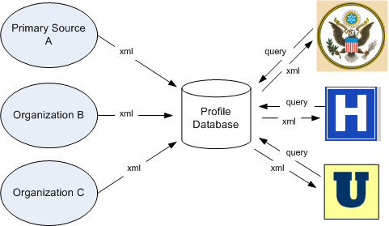

MedBiquitous Professional Profile Web Services
Description
The MedBiquitous Professional Profile Web Services provides a consistent means of exchanging professional profile data, including name, address, user id, certification, licensure, education, and more. This structure then enables the automated tracking and provision of credentialing services. Professional Profile Web Services
functionality can be useful for credentialing and data aggregation among related organizations,
such as specialty boards or licensing boards.
If your organization has a repository of professional data and you are looking for a way to import new or updated professional records to your repository, the Healthcare Professional Profile Web Services provides WSDL and XML code for a consistent interface between applications. You can download the WSDL code and use a Web-Service development framework to generate code that allows your repository to ingest and provide professional data conformant to ANSI/MEDBIQ PP.10.1-2008, The Healthcare Professional Profile.
The diagram below shows an organization using Healthcare Professional Profile Services to
collect data from various partner organizations and provide credentialing services to government,
hospitals, and universities.

Web Services Descriptions
MedBiquitous uses a component-based approach to Web services descriptions, separating the abstract components from the concrete components. Download memberservice.zip for all the Web services code and the payload schemas.You may also download the component files individually. Best practice is to point to the membertypes.xsd and memberbindings.wsdl on this server.
Implementers need to modify the memberservice.wsdl to specify the location and namespace of their Web service.
Visit http://ns.medbiq.org/member/v1/ for information on the Professional Profile payload schemas and specifications.
Specification
A draft specification for Professional Profile Services is available at: http://www.medbiq.org/working_groups/professional_profile/ProfessionalProfileServices.pdf
For more information, visit the MedBiquitous
website.